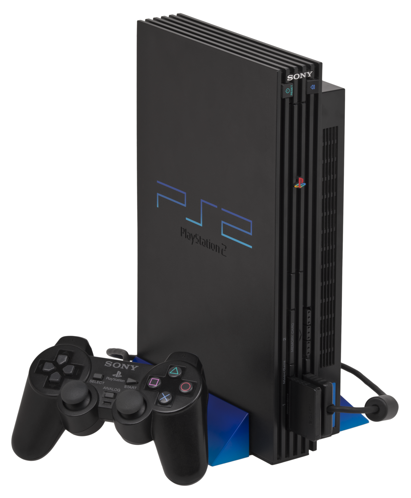

SGR - Your Source for Video Game News
XBOX: THE FUTURE IS NOW - COMING AT YOU IN 2001!
Get ready to buckle up because we're about to unveil a gaming behemoth that's going to change the way you think about entertainment. Drumroll, please! Introducing the groundbreaking marvel – the Xbox!
ENTER THE NEXT DIMENSION OF GAMING
Picture this: a sleek, black monolith that's not just a console but a portal to a new era of gaming. The Xbox is Microsoft's brainchild, and it's here to redefine the gaming landscape. It's not just a gaming system; it's a glimpse into the future of digital entertainment.
THE GATEWAY TO ONLINE GAMING
Prepare to venture into uncharted territory – Xbox Live is here to connect gamers from around the globe. With a subscription to this revolutionary online service, you can challenge your friends to epic battles, join multiplayer mayhem, and immerse yourself in a world where the competition never sleeps.
THE FUTURE STARTS NOW
Ladies and gentlemen, the Xbox is not just a console; it's a revolution in gaming technology. With its powerful hardware, innovative controller, and a library of exclusive titles, it's poised to become the epicenter of digital entertainment. The future of gaming has arrived, and its name is Xbox. Get ready to level up!
PLAYSTATION 2: COMING AT YOU IN MARCH 2000!
What to expect for the new Playstation 2!?
The PlayStation 2 is a home video game console developed and marketed by Sony Interactive Entertainment. It is the successor to the original PlayStation, as well as the second installment in the PlayStation brand of consoles. The original has sold about 100+ MILLIONS of consoles world wide! The brand new PlayStation 2 will bring in exclusive titles like, "God Of War," "Ace of Combat," and many more games stated by Sony themselves. And when we say exclusive, we really ment exclsuive. You wont be able to play these games anywhere else besides the PlayStation only. As time passes on, Sony will explain and show more to the public of what the PlayStation 2 has for us in store. But the question is, can the PlayStation 2 live up to the hype? Can Microsoft compet with Sony with their very own consoles? Only time can tell!
SAY GOODBYE TO THE DREAMCAST!
Sony, the creator of the Dreamcast, will be discontinued into 2001! The Dreamcast is a home video game console released by Sega on November 27, 1998, in Japan; September 9, 1999, in North America; and October 14, 1999, in Europe. The Dreamcast was unfortunately not making any sales, and because of that, they have no other choice but to discontinued the Dreamcast up till 2001. So get one before they all go out!